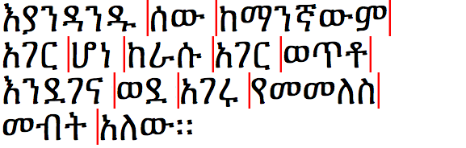
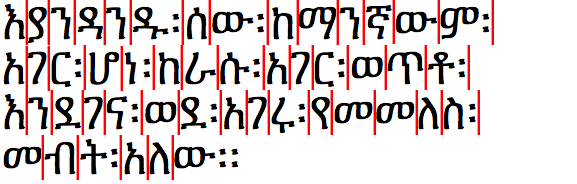
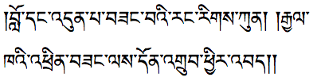
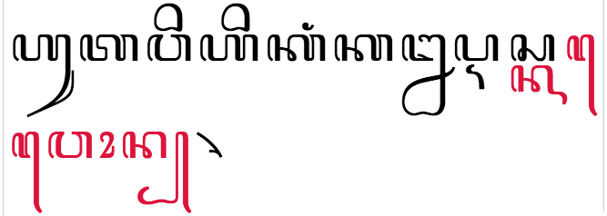

本文总结了排版各种文字时的换行策略。
断行通常是文本对齐之前的操作。有关对齐方法的总结，请参阅两端对齐的方法 。
本文对不同书写系统使用的不同断行策略进行了概述，但只进行了概述。几乎所有文种都有特殊的避头尾字符，一些书写系统有连字符，而另一些则没有。在本文中，我们只会举例说明主要差异，不会详尽列出所有细节。
有关各文种如何断行的更多详细信息，请参阅语言支持索引 。
基本决定因素
行尾换行的最基本的算法要考虑两个因素：
文本中的“词”或音节是否分开，如果分开，如何分开
该书写系统 将单词、音节还是字符作为一个整体换到下一行
什么是词？
术语“词” 很难被明确定义，但词和音节之间的区别在某些语言中对于换行来说很重要。
应用程序和算法通常假设词是一个由空格（偶尔也会是标点）分隔的字符序列。然而，有些语言虽然是用仅分隔音节的文字书写的，却仍将单词视为由一个或多个音节组成的单位（例如藏语和越南语）。还有一些语言根本不在视觉上区分词或音节的边界，却会区分词和音节的概念（如柬埔寨语通常不会在短语内部进行视觉上的分隔，但在换行时强烈倾向于将“单词”视为基本单位，而不是音节或字符）。
即使词的概念对于特定的语言被假定为由空格限定的字母序列，从语言学上讲，这仍然掩盖了一些重要的潜在差异和复杂性。这些词的构成可能因语言而异，例如：
芬兰语中的单词可能以几个介词性的或其它类型的后缀结尾（talo 的意思是“房子”，而talostani 的意思是“来自我的房子”）。
德语中的词可能是复合词，由一系列更短的词组成，例如Eingabeverarbeitungsfunktionen 是由Eingabe 、Verarbeitung 、Funktion 和一个复数标记组合成的复合词。
在阿拉伯语中，像“和”（و ）这样比较短的词可以直接写在下一个词的旁边，中间不包含空格（如الجامعات والكليات 的意思是“大学和学院”，但包含一个空格）。
在柬埔寨语、泰语、日语等不存在“单词分隔符”的语言中，当涉及复合名词或助词时，对单词的定义可能是主观的。例如，“写作”的泰语翻译การเขียน ，可能被视作一个词 (kānkhīan) ，也可能被视作两个词 (kān khīan)。
本文不会对“词”这个术语下一个严格的定义，我们只是用它来表示一个拥有模糊定义的语义单元，一个单词可能包含一个或多个音节。
大体分类
下表提供了影响书写系统换行的因素的概览。表中所列语言+文字 的组合仅为示例，且仅包含现代使用的书写系统。如果语言名称后面没有文字名称，则语言和文字具有相同的名称。请注意，使用多种文字写一种语言的情况是很常见的。
另请注意，带有星号的语言文字组合在表中出现次数超过一次，表示存在不同的断行方法，稍后会描述具体原因。
空格作为单词 分隔符
其他单词 分隔符
音节分隔符
无分隔符
词 间换行阿姆哈拉语（吉兹字母）*、阿拉伯语、亚美尼亚语、孟加拉语、切罗基语、迪维希语（它拿字母）、英语（拉丁字母）、英语（德塞雷特字母）、富拉语（阿德拉姆字母）、格鲁吉亚语、希腊语、古吉拉特语、希伯来语、印地语（ 天城文）、伊努克提图特语（UCAS）、卡纳达语、朝鲜语/韩国语（朝鲜字/韩字）*、马拉雅拉姆语、曼丁哥语（西非书面字母）、奥里亚语、旁遮普语（古木基文）、俄语（西里尔字母）、僧伽罗语、叙利亚语、泰米尔语、泰卢固语、Mandaic、Tedim (pau cin hau)
Samaritan
柬埔寨语、老挝语 、缅甸语 、泰语
音节间换行
东部占语、朝鲜语/韩国语（朝鲜字/韩字）*、巽他语
越南语（拉丁 字母 ）、藏语
巴厘语、巴塔克语 、汉语 、爪哇语 、西部占语
字符间换行
阿姆哈拉语（吉兹字母）*
日语、瓦伊语
古代文字更有可能使用scriptio continua 的方法（不在单词或音节处中断），尽管在描述它们的现代文本中你可能会发现空格分隔文本的单元。这里提到的文字以前也可能使用不同的分词和换行规则。
在接下来的部分中，我们将给出换行主要方式的示例和可能造成的影响。本文只关注现代的用法，并且在后半部分再说连字符的事。
在单词边界换行的的语言
空格分隔单词
这是大多数人都熟悉的方法，也是本文的英文原文所使用的方式。当到达行尾时，应用通常会查找前一个空格，该空格会被视为单词分隔符，而其后的所有内容会被放到下一行*。
许多文种都使用这种方法。其中包括用于所有主要欧洲语言的文字，包括西里尔字母和希腊字母； 用于主要印度语言的文种，例如天城文、古吉拉特文和泰米尔文；用于现代闪米特语族的分支语言的文种，如阿拉伯文、希伯来文和叙利亚字母；以及用于美洲语言的文字，例如切罗基语和加拿大原住民音节文字（UCAS）。
印地语文本（天城文）的换行机会
以从右向左的文字书写的语言（如阿拉伯语、希伯来语和迪维希语）通常也会将完整的单词换行到下一行。当然，其方向与英语等语言相反。
阿拉伯语的换行机会
然而，当包含双向文本时，阿拉伯语、希伯来语或迪维希语等语言的文本会变得更加复杂。如果我们在上面的例子中让文本变成“...في this is English ذلك...
对嵌入反方向文本的阿拉伯语换行
查看上面的示例，你会注意到英语单词的相对顺序在换行后已经发生了改变。这是因为横排的双向文本不会出现从下一行读到上一行的情况。这个结果由双向文本的重新排序流程管理，发生在在计算换行机会之前，并且只影响字形的位置，而内存中的字符按发音顺序排列，不会改变。
直排的中文、日文、朝鲜文/韩文和传统蒙古文向上换行，新行对于CJK 来说会出现在左侧，对于蒙文来说会出现在右侧。
东南亚：无单词分隔符
泰语、老挝语和柬埔寨语在书写时单词之间不包含空格。文本中确实会出现空格，但空格被用作短语分隔符，而不是单词分隔符。然而，当泰语、老挝语或柬埔寨语文本到一行的末尾时，需要按词断行。对于人类来说，这并不太难（如果你会这种语言的话），但应用程序必须找到来理解文本以确定词边界的方法。
柬埔寨语的断行机会
大多数应用会使用字典查询的方式来实现，这种方式不是100%完美的，作者可能需要不时进行调整。例如，对于同样的泰语文本有两种可能的换行方式。
这里的区别不只是实现对错的问题。如前所述，在某些书写系统中，没有清晰的单词的定义，所以上述差异源于对复合词是否该被断开的主观看法。
过去，Unicode字符U+200B ZERO WIDTH SPACE （ZWSP）用于标记这些文种的词边界，一些标准键盘如柬埔寨语的NIDA仍然使用空格键生成ZWSP，但最近，主流语言开始使用断行算法，而这意味着ZWSP不是必需的了。大规模手动录入ZWSP也不太实用，因为用户在大多数场景下看不到分隔符；这会导致ZWSP在错误的位置出现或被多次插入。然而，ZWSP可用于人工修复断行的行为。
同样重要的是，此处提到的文字可能用于书写所提到的语言之外的语言，特别是需要不同词典的少数民族语言。由于这类词典在某些浏览器或其他应用中可能没有，因此用户倾向于使用ZWSP。
在音节边界换行的的语言
一些书写系统不仅在单词边界换行，还在音节边界换行。人们通常希望不拆分单词，但文本也可以在音节边界处断开。
应用通常需要对文本进行分析以确定音节边界出现的位置。音节的结尾常常是一个作为组合字符（combining character）的末尾辅音，某种特殊的标记。但在某些情况下，音节边界的位置可能在视觉上不明显。此外，这里的音节可能是正字法音节，而不是语音音节（见下文）。
汉语和朝鲜语/韩国语也属于这一类，尽管它们有点不寻常，因为一个音节通常对应一个字符，而不是一个序列。（尽管在极少数情况下朝鲜语/韩国语存储为字母 序列而不是单个音节字符。）
藏文：可见的音节分隔符
在音节边界处有规律地中断的书写系统的一个很好的例子，就是藏文，藏文使用 ་ [U+0F0B TIBETAN MARK INTERSYLLABIC TSHEG ]
藏文通过将完整的音节移动到下一行来换行，因此原始行以音节符结束。藏语单词可以由多个音节组成，虽然最好避免在单词中间断行，但这不是必需的，而音节应始终保持完整。
朝鲜语/韩国语：多种方式
朝鲜语/韩国语 的不寻常之处在于现代韩文文本中的单词通常由空格分隔，但书写系统允许内容作者选择不同的方式来对文本断行。
基于音节进行断行很常见，尤其是在两端对齐的文本中（这在CJK 书写系统中比在西文中更常见），但右边参差不齐的段落通常会在单词分界处断行。然而，这种选择是出于作者的偏好，而不是任何硬性规定。
你可能还会遇到单词之间没有空格的朝鲜语/韩国语文本（就像中文和日文一样），尤其是较旧的文本。
我们可以将朝鲜字/韩字称为为基于字符的换行模式，而不是基于音节的换行模式。当朝鲜字/韩字存储为字母 序列时，基于音节的断行特别合适，但绝大多数朝鲜语/韩国语文本都存储为音节字符序列。
巽他语、东部占语：空格作为单词分隔符
我们看到朝鲜语/韩国语文本在单词之间使用空格，但不一定用这些空格作为断行机会。还有一些其他的书写系统也用空格分隔单词，但实际上可能会在音节边界处换行。与常常一个字符一个字符地换行的韩国语不同，这些书写系统使用与音节相对应的一系列字符作为文本单位。
更多东南亚的文种：没有单词分隔符
许多其他东南亚文字在单词之间没有空格。在这些书写系统中，除了词边界之外，你可能还会发现文本在音节边界处换行。
爪哇语中的断行机会
上面的爪哇语断行机会对应于正字法 （orthographic）音节，而不是语音（phonetic）音节。例如，如果一个语音音节以辅音结尾，而下一个音节以辅音开头，它们可能会以特殊方式堆叠或结合，而这些组合不会被拆分。在许多文种中，这些特殊结合只出现在单词内部，但在某些文种中（如爪哇文和巴厘文），它们实际上可能会跨越词边界。
不同的颜色代表两个爪哇语词pangan 和dika ，但断行机会（红线）出现在这个结构之前，把最后的n从前一个词中截断。
如果书写系统可以使用组合字符表示音节末的辅音，则这些辅音通常被视为前面的正字法音节的一部分。
基于字符的断行
这些语言倾向于以字符为单位换行，不考虑音节或单词边界。不过这有点过于简单化了，正如我们在本节和后续部分中看到的，通常会有避头尾的标点影响断行机会，还有一些相邻字符不能被拆分成两行。
日语和瓦伊语：基于音拍的断行
日语和瓦伊语通常将单个字符换行到下一行，而不管单词或音节的边界。
这种类型的换行有时被称为基于音节的换行，但实际上日语是一种基于音拍 的书写系统，而不是基于音节的。例如，有的文本会在音节きょう （发音为kyō ，意思是“今天”）内换行。
虽然这么说，事情（一如既往）并不那么简单。虽然将单词きょう 的三个字符中的最后一个换行到下一行是很常见的，但一些内容作者更喜欢让二个小字符和第一个字符始终保持在一起不分开。CSS为line-break属性提供了严格（strict）和宽松（loose）的值，这样内容作者就可以控制这种行为了。后一个值允许在两者之间换行。这通常对报纸等窄栏中的文本很有用。
此外，在某些情况下，例如在标题中，内容作者可能更喜欢在换行时不拆分“单词”。但是请注意，在日语中，复合词通常由单个词构成，并且日语会在词后添加助词，这可能会，也可能不会被视为词的一部分。因此，就像泰语一样，日语中的词边界是相当主观的。
在某些情况下，中文和日文的基于字的换行方式也适用于嵌入的西文。被嵌入的文本被换行时，不考虑音节或连字符边界。同样，嵌入在西文中的日文和中文文本可能在换行时被视为一个单元。（可以使用CSS属性控制此行为。）
吉兹字母：不是空格的单词分隔符
现代埃塞俄比亚的文本可能在单词之间使用空格，在这种情况下，整个单词作为一个单元换行到下一行。

当单词由空格分隔时，阿姆哈拉语中的换行机会
然而，埃塞俄比亚的文本也可能使用传统的词分隔符፡ [U+1361 ETHIOPIC WORDSPACE ]

当单词由埃塞俄比亚的词分隔符分开时，阿姆哈拉语中的换行机会
当然，与其他基于字符的断行方式一样，我们还需要考虑其他规则。例如，最好在行首处的词分隔符之前放置不少于两个字符，行首和行尾的标点符号会影响默认的断行行为（见下文）。
连字符
连字符（hyphenation）是一种有助于文本更好地适应的一种机制。只有一部分书写系统包含连字符，而连字符在将单词分成更小的单元进行换行时需要使用。
连字符的规则在使用同一文种的不同语言中不同，这一点很重要。尽管都使用拉丁字母，德语和英语的正字法规则可能大不相同。阿拉伯语的内容通常不使用连字符，但维吾尔语则允许使用连字符，尽管它们都使用阿拉伯文。（请注意，阿拉伯语提供了一系列替代方法用于在两端对齐时延长或缩短一行。）
连字符的机制也多种多样。对于某些语言，连字符（可能看起来不像“-”）出现在下一行的开头，而在其他语言中，它可能在两行中都出现。在某些情况下，单词的拼写会围绕连字符进行变化，比如荷兰语中的cafeetje → café-tje 和skiërs → ski-ers ，及匈牙利语中的Összeg → Ösz-szeg 。
一些文种可能会在单词内部断行，但不会使用“连字符”来表示中断。
行首行尾禁则
标点符号
上面的日语示例清楚地表明了在某些标点符号之前经常禁止断行。大部分的文种都不应把表示短语或章节末尾的标点符号放在行首。
某些标点符号禁止出现在行尾，比如开始圆括号和开始方括号。
在这些情况下，应用通常会寻找前面的断行机会，并将标点符号及其前面的文本一起移到下一行。
如果在对齐时可以挤压行内其他字符周围的空间，则可能没有必要将标点字符移到下一行，因为行的长度已经合适。
如果无法做到这一点，有时在日语和中文等语言中看到的另一种策略是将标点符号留在行尾的边距之外。（显然，这只在有可见边距时才能有效。）
防止断行
在某些情况下，我们需要一种机制来防止 断行。当非常短的一行中的一系列字符没有自然的断行机会时，这特别有用，但在想要自定义 断行行为的其他情况下也可能很有用。
Unicode有一组定义默认字素簇 的规则，这些规则包含了断行时通常不应被拆分的字符序列。例如，这包括跟在基字符（base character）之后的任何组合字符。不过，它也可以被扩展，以防止印度或东南亚的等文字中多字符音节内的中断。
Unicode中还有一些字符能够将相邻字符粘合在一起，包括U+00A0 NO-BREAK SPACE 和 U+2011 NON-BREAKING HYPHEN 等字符，以及在想要防止断行的情况下使用的不可见的U+2060 WORD JOINER 。
我们已经提到了在日语中用于将某些字符保持在一起的strict模式，我们还可以用标记语言或样式来覆盖默认的断行行为。例如，在日语的标题中，有时需要在词边界处换行，以避免在新的一行以少量字符结束，而我们可以用样式来实现这一点。
其他特殊规则
除了行首行尾禁则之外，可能还有与换行相关的更复杂的规则。
在这里，我们通过示例提供一些有关传统藏文断行的情况。在藏文中，U+0F0D TIBETAN MARK SHAD 1 用作短语分隔符，双垂符（双shay）是主题分隔符。如果shay之前只有一个音节换行，则shay（或第一个shay，当有两个时）就会被替换为U+0F11 TIBETAN MARK RIN CHEN SPUNGS SHAD 2 。在一个主题的结尾，根据藏文规则只能转换一个shay，但是转换两个是比较流行的。这种变化表明在该行的开头有一个实际上属于前一行的遗留音节。
1) SHAD（单垂符，发音为shay）
2) RIN CHEN SPUNGS SHAD（聚宝垂符，前垂符）
1) 
2)
在 (1) 的行尾附近的双垂符（双shad）在 (2) 中换行时变成双聚宝垂符（rin chen spungs shad）
这在以下情况下会有所不同：
当一行以le'u 3 开头时，不会使用聚宝垂符，因为le'u 3 的发音包含两个音节。
有时，如果仅替换双分句线（两个shay）中的第一个，这种样式被认为不够吸引人。
一些纸质书不使用聚宝垂符的替代，但是大多数书似乎使用与pecha相同的规则。
最后说一下爪哇文中的特殊行为。当新的一行以U+A9BA JAVANESE VOWEL SIGN TALING 4 开始时，一个相同的字形将放置在上一行的行尾。重要的是，内存中只有一个taling字符：上一行的字是个幽灵。
4)

当单词kawon 在won 之前被拆分时，一个taling字形出现在行尾和行首。
这在现代文本中并不常见，不过这并不奇怪，因为为了处理这种情况需要一种相当特殊的算法。当使用以前的排版技术时，通过在一行活字行的末尾添加一些活字，这（和上面的藏文示例都）相对容易实现。然而，网页是动态的，当用户改变浏览器窗口尺寸时，行长可以随时改变。仅当中断恰好落在正确的位置时才必须产生所示行为，而当浏览器窗口的宽度发生变化时文本重排，额外的taling需要消失。


 TALING
TALING